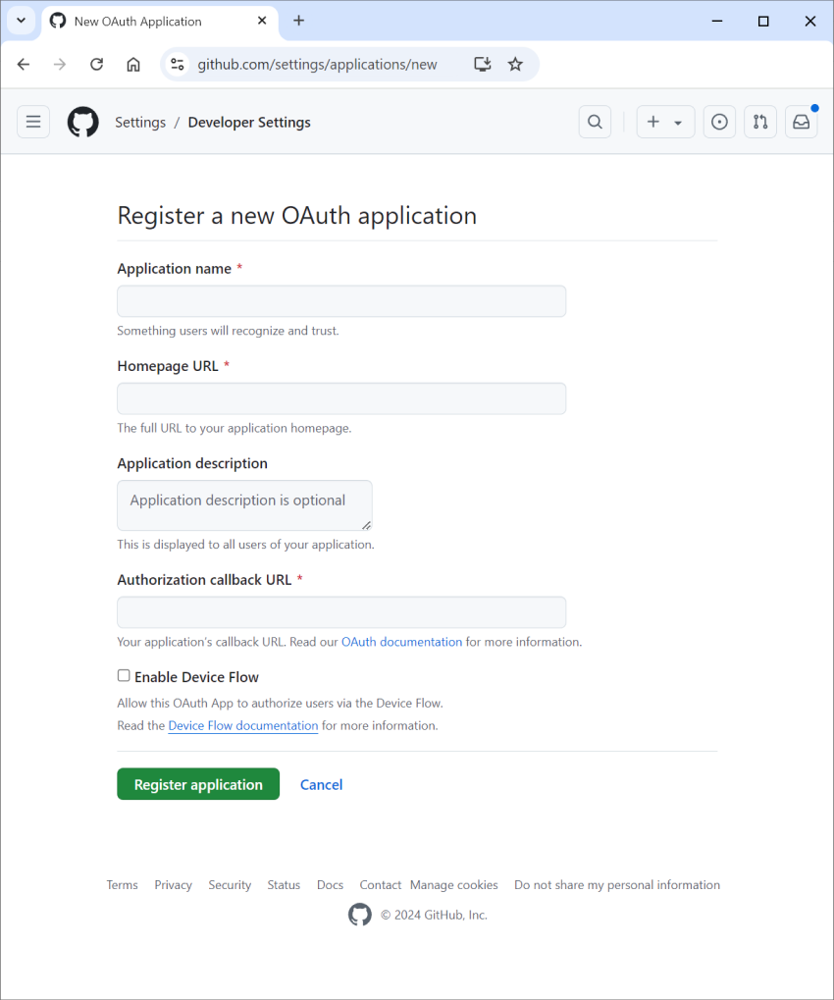

import os
from fasthtml.oauth import GoogleAppClient
client = GoogleAppClient(os.getenv("AUTH_CLIENT_ID"),
os.getenv("AUTH_CLIENT_SECRET"))OAuth
OAuth is an open standard for ‘access delegation’, commonly used as a way for Internet users to grant websites or applications access to their information on other websites but without giving them the passwords. It is the mechanism that enables “Log in with Google” on many sites, saving you from having to remember and manage yet another password. Like many auth-related topics, there’s a lot of depth and complexity to the OAuth standard, but once you understand the basic usage it can be a very convenient alternative to managing your own user accounts.
On this page you’ll see how to use OAuth with FastHTML to implement some common pieces of functionality.
Creating an Client
FastHTML has Client classes for managing settings and state for different OAuth providers. Currently implemented are: GoogleAppClient, GitHubAppClient, HuggingFaceClient and DiscordAppClient - see the source if you need to add other providers. You’ll need a client_id and client_secret from the provider (see the from-scratch example later in this page for an example of registering with GitHub) to create the client. We recommend storing these in environment variables, rather than hardcoding them in your code.
The client is used to obtain a login link and to manage communications between your app and the OAuth provider (client.login_link(redirect_uri="/redirect")).
Using the OAuth class
Once you’ve set up a client, adding OAuth to a FastHTML app can be as simple as:
from fasthtml.oauth import OAuth
from fasthtml.common import FastHTML, RedirectResponse
class Auth(OAuth):
def get_auth(self, info, ident, session, state):
email = info.email or ''
if info.email_verified and email.split('@')[-1]=='answer.ai':
return RedirectResponse('/', status_code=303)
app = FastHTML()
oauth = Auth(app, client)
@app.get('/')
def home(auth): return P('Logged in!'), A('Log out', href='/logout')
@app.get('/login')
def login(req): return Div(P("Not logged in"), A('Log in', href=oauth.login_link(req)))There’s a fair bit going on here, so let’s unpack what’s happening in that code:
- OAuth (and by extension our custom Auth class) has a number of default arguments, including some key URLs:
redir_path='/redirect', error_path='/error', logout_path='/logout', login_path='/login'. It will create and handle the redirect and logout paths, and it’s up to you to handle/login(where unsuccessful login attempts will be redirected) and/error(for oauth errors). - When we run
oauth = Auth(app, client)it adds the redirect and logout paths to the app and also adds some beforeware. This beforeware runs on any requests (apart from any specified with theskipparameter).
The added beforeware specifies some app behaviour:
- If someone who isn’t logged in attempts to visit our homepage (
/) here, they will be redirected to/login. - If they are logged in, it calls a
check_invalidmethod. This defaults to False, which let’s the user continue to the page they requested. The behaviour can be modified by defining your owncheck_invalidmethod in the Auth class - for example, you could have this forcibly log out users who have recently been banned.
So how does someone log in? If they visit (or are redirected to) the login page at /login, we show them a login link. This sends them to the OAuth provider, where they’ll go through the steps of selecting their account, giving permissions etc. Once done they will be redirected back to /redirect. Behind the scenes a code that comes as part of their request gets turned into user info, which is then passed to the key function get_auth(self, info, ident, session, state). Here is where you’d handle looking up or adding a user in a database, checking for some condition (for example, this code checks if the email is an answer.ai email address) or choosing the destination based on state. The arguments are:
self: the Auth object, which you can use to access the client (self.cli)info: the information provided by the OAuth provider, typically including a unique user id, email address, username and other metadata.ident: a unique identifier for this user. What this looks like varies between providers. This is useful for managing a database of users, for example.session: the current session, that you can store information in securelystate: you can optionally pass in some state when creating the login link. This persists and is returned after the user goes through the Oath steps, which is useful for returning them to the same page they left. It can also be used as added security against CSRF attacks.
In our example, we check the email in info (we use a GoogleAppClient, not all providers will include an email). If we aren’t happy, and get_auth returns False or nothing (as in the case here for non-answerai people) then the user is redirected back to the login page. But if everything looks good we return a redirect to the homepage, and an auth key is added to the session and the scope containing the users identity ident. So, for example, in the homepage route we could use auth to look up this particular user’s profile info and customize the page accordingly. This auth will persist in their session until they clear the browser cache, so by default they’ll stay logged in. To log them out, remove it ( session.pop('auth', None)) or send them to /logout which will do that for you.
Explaining OAuth with a from-scratch implementation
Hopefully the example above is enough to get you started. You can also check out the (fairly minimal) source code where this is implemented, and the examples here.
If you’re wanting to learn more about how this works, and to see where you might add additional functionality, the rest of this page will walk through some examples without the OAuth convenience class, to illustrate the concepts. This was written before said OAuth class was available, and is kept here for educational purposes - we recommend you stick with the new approach shown above in most cases.
A Minimal Login Flow (GitHub)
Let’s begin by building a minimal ‘Sign in with GitHub’ flow. This will demonstrate the basic steps of OAuth.
OAuth requires a “provider” (in this case, GitHub) to authenticate the user. So the first step when setting up our app is to register with GitHub to set things up.
Go to https://github.com/settings/developers and click “New OAuth App”. Fill in the form with the following values, then click ‘Register application’.
- Application name: Your app name
- Homepage URL: http://localhost:8000 (or whatever URL you’re using - you can change this later)
- Authorization callback URL: http://localhost:8000/auth_redirect (you can modify this later too)

After you register, you’ll see a screen where you can view the client ID and generate a client secret. Store these values in a safe place. You’ll use them to create a GitHubAppClient object in FastHTML.
This client object is responsible for handling the parts of the OAuth flow which depend on direct communication between your app and GitHub, as opposed to interactions which go through the user’s browser via redirects.
Here is how to setup the client object:
client = GitHubAppClient(
client_id="your_client_id",
client_secret="your_client_secret"
)You should also save the path component of the authorization callback URL which you provided on registration.
This route is where GitHub will redirect the user’s browser in order to send an authorization code to your app. You should save only the URL’s path component rather than the entire URL because you want your code to work automatically in deployment, when the host and port part of the URL change from localhost:8000 to your real DNS name.
Save the special authorization callback path under an obvious name:
auth_callback_path = "/auth_redirect"
Note
It’s recommended to store the client ID, and secret, in environment variables, rather than hardcoding them in your code.
When the user visit a normal page of your app, if they are not already logged in, then you’ll want to redirect them to your app’s login page, which will live at the /login path. We accomplish that by using this piece of “beforeware”, which defines logic which runs before other work for all routes except ones we specify to be skipped:
def before(req, session):
auth = req.scope['auth'] = session.get('user_id', None)
if not auth: return RedirectResponse('/login', status_code=303)
counts.xtra(name=auth)
bware = Beforeware(before, skip=['/login', auth_callback_path])We configure the beforeware to skip /login because that’s where the user goes to login, and we also skip the special authorization callback path because that is used by OAuth itself to receive information from GitHub.
It’s only at your login page that we start the OAuth flow. To start the OAuth flow, you need to give the user a link to GitHub’s login for your app. You’ll need the client object to generate that link, and the client object will in turn need the full authorization callback URL, which we need to build from the authorization callback path, so it is a multi-step process to produce this GitHub login link.
Here is an implementation of your own /login route handler. It generates the GitHub login link and presents it to the user:
@app.get('/login')
def login(request)
redir = redir_url(request,auth_callback_path)
login_link = client.login_link(redir)
return P(A('Login with GitHub', href=login_link)) Once the user follows that link, GitHub will ask them to grant permission to your app to access their GitHub account. If they agree, GitHub will redirect them back to your app’s authorization callback URL, carrying an authorization code which your app can use to generate an access token. To receive this code, you need to set up a route in FastHTML that listens for requests at the authorization callback path. For example:
@app.get(auth_callback_path)
def auth_redirect(code:str):
return P(f"code: {code}")This authorization code is temporary, and is used by your app to directly ask the provider for user information like an access token.
To recap, you can think of the exchange so far as:
- User to us: “I want to log in with you, app.”
- Us to User: “Okay but first, here’s a special link to log in with GitHub”
- User to GitHub: “I want to log in with you, GitHub, to use this app.”
- GitHub to User: “OK, redirecting you back to the app’s URL (with an auth code)”
- User to Us: “Hi again, app. Here’s the GitHub auth code you need to ask GitHub for info about me” (delivered via
/auth_redirect?code=...)
The final steps we need to implement are as follows:
- Us to GitHUb: “A user just gave me this auth code. May I have the user info (e.g., an access token)?”
- GitHub to us: “Since you have an auth code, here’s the user info”
It’s critical for us to derive the user info from the auth code immediately in the authorization callback, because the auth code may be used only once. So we use it that once in order to get information like an access token, which will remain valid for longer.
To go from the auth code to user info, you use info = client.retr_info(code,redirect_uri). From the user info, you can extract the user_id, which is a unique identifier for the user:
@app.get(auth_callback_path)
def auth_redirect(code:str, request):
redir = redir_url(request, auth_callback_path)
user_info = client.retr_info(code, redir)
user_id = info[client.id_key]
return P(f"User id: {user_id}")But we want the user ID not to print it but to remember the user.
So let us store it in the session object, to remember who is logged in:
@app.get(auth_callback_path)
def auth_redirect(code:str, request, session):
redir = redir_url(request, auth_callback_path)
user_info = client.retr_info(code, redir)
user_id = user_info[client.id_key] # get their ID
session['user_id'] = user_id # save ID in the session
return RedirectResponse('/', status_code=303)The session object is derived from values visible to the user’s browser, but it is cryptographically signed so the user can’t read it themselves. This makes it safe to store even information we don’t want to expose to the user.
For larger quantities of data, we’d want to save that information in a database and use the session to hold keys to lookup information from that database.
Here’s a minimal app that puts all these pieces together. It uses the user info to get the user_id. It stores that in the session object. It then uses the user_id as a key into a database, which tracks how frequently every user has hit an increment button.
import os
from fasthtml.common import *
from fasthtml.oauth import GitHubAppClient, redir_url
db = database('data/counts.db')
counts = db.t.counts
if counts not in db.t: counts.create(dict(name=str, count=int), pk='name')
Count = counts.dataclass()
# Auth client setup for GitHub
client = GitHubAppClient(os.getenv("AUTH_CLIENT_ID"),
os.getenv("AUTH_CLIENT_SECRET"))
auth_callback_path = "/auth_redirect"
def before(req, session):
# if not logged in, we send them to our login page
# logged in means:
# - 'user_id' in the session object,
# - 'auth' in the request object
auth = req.scope['auth'] = session.get('user_id', None)
if not auth: return RedirectResponse('/login', status_code=303)
counts.xtra(name=auth)
bware = Beforeware(before, skip=['/login', auth_callback_path])
app = FastHTML(before=bware)
# User asks us to Login
@app.get('/login')
def login(request):
redir = redir_url(request,auth_callback_path)
login_link = client.login_link(redir)
# we tell user to login at github
return P(A('Login with GitHub', href=login_link))
# User comes back to us with an auth code from Github
@app.get(auth_callback_path)
def auth_redirect(code:str, request, session):
redir = redir_url(request, auth_callback_path)
user_info = client.retr_info(code, redir)
user_id = user_info[client.id_key] # get their ID
session['user_id'] = user_id # save ID in the session
# create a db entry for the user
if user_id not in counts: counts.insert(name=user_id, count=0)
return RedirectResponse('/', status_code=303)
@app.get('/')
def home(auth):
return Div(
P("Count demo"),
P(f"Count: ", Span(counts[auth].count, id='count')),
Button('Increment', hx_get='/increment', hx_target='#count'),
P(A('Logout', href='/logout'))
)
@app.get('/increment')
def increment(auth):
c = counts[auth]
c.count += 1
return counts.upsert(c).count
@app.get('/logout')
def logout(session):
session.pop('user_id', None)
return RedirectResponse('/login', status_code=303)
serve()Some things to note:
- The
beforefunction is used to check if the user is authenticated. If not, they are redirected to the login page. - To log the user out, we remove the user ID from the session.
- Calling
counts.xtra(name=auth)ensures that only the row corresponding to the current user is accessible when responding to a request. This is often nicer than trying to remember to filter the data in every route, and lowers the risk of accidentally leaking data. - In the
auth_redirectroute, we store the user ID in the session and create a new row in theuser_countstable if it doesn’t already exist.
You can find more heavily-commented version of this code in the oauth directory in fasthtml-example, along with an even more minimal example. More examples may be added in the future.
Revoking Tokens (Google)
When the user in the example above logs out, we remove their user ID from the session. However, the user is still logged in to GitHub. If they click ‘Login with GitHub’ again, they’ll be redirected back to our site without having to log in again. This is because GitHub remembers that they’ve already granted our app permission to access their account. Most of the time this is convenient, but for testing or security purposes you may want a way to revoke this permission.
As a user, you can usually revoke access to an app from the provider’s website (for example, https://github.com/settings/applications). But as a developer, you can also revoke access programmatically - at least with some providers. This requires keeping track of the access token (stored in client.token["access_token"] after you call retr_info), and sending a request to the provider’s revoke URL:
auth_revoke_url = "https://accounts.google.com/o/oauth2/revoke"
def revoke_token(token):
response = requests.post(auth_revoke_url, params={"token": token})
return response.status_code == 200 # True if successfulNot all providers support token revocation, and it is not built into FastHTML clients at the moment.
Using State (Hugging Face)
Imagine a user (not logged in) comes to your AI image editing site, starts testing things out, and then realizes they need to sign in before they can click “Run (Pro)” on the edit they’re working on. They click “Sign in with Hugging Face”, log in, and are redirected back to your site. But now they’ve lost their in-progress edit and are left just looking at the homepage! This is an example of a case where you might want to keep track of some additional state. Another strong use case for being able to pass some uniqie state through the OAuth flow is to prevent something called a CSRF attack. To add a state string to the OAuth flow, include a state argument when creating the login link:
# in login page:
link = A('Login with GitHub', href=client.login_link(state='current_prompt: add a unicorn'))
# in auth_redirect:
@app.get('/auth_redirect')
def auth_redirect(code:str, session, state:str=None):
print(f"state: {state}") # Use as needed
...The state string is passed through the OAuth flow and back to your site.
A Work in Progress
This page (and OAuth support in FastHTML) is a work in progress. Questions, PRs, and feedback are welcome!